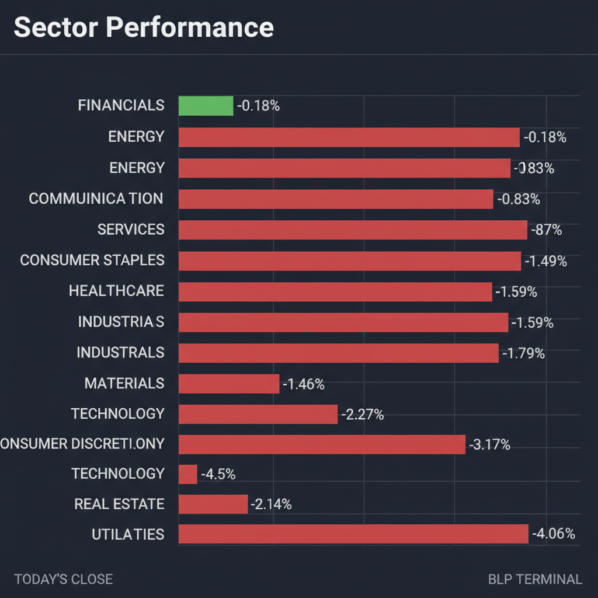
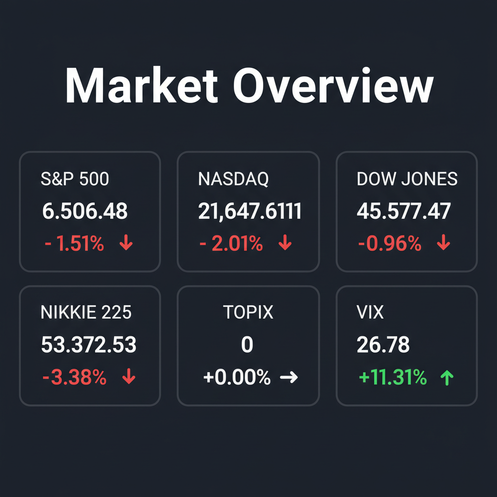

Daily Investment Report - 2026-03-23
Generated: 2026/3/23 8:12:59


投資チームミーティングの議長として、各専門家の分析を統合した最終レポートをお届けします。
現在の市場は、マクロ経済の強烈な逆風（原油高・高金利）と、それに伴うパニック的な売りが交錯する極めて神経質な局面です。本レポートでは、リスク管理を最優先としつつ、市場のノイズに隠れた中小型株の投資機会を整理しました。
1. エグゼクティブサマリー
- 原油110ドルへの高騰と海外中銀のタカ派姿勢により、スタグフレーション（物価高と景気後退の同時進行）懸念が強まり、強烈なリスクオフ相場となっています。
- VIX指数が26台へ急騰し、主要指数が重要なサポートラインを割り込もうとしているため、テクニカル・リスク管理の観点から市場は「底なしの調整局面」の入り口にあります。
- 投資戦略としては、安易な押し目買いを控えてキャッシュ比率を高めつつ、インフレ耐性のあるエネルギーや、M&Aが活発な機能性食品関連の「隠れた優良中小型株」の決算を見極める防御的スタンスを推奨します。
2. 注目銘柄リスト
強気（買い推奨：※決算確認後の押し目買い）
- コーセル（6905） [時価総額：約400億〜500億円規模]: 無借金かつ自己資本比率70%超という極めて強固な財務基盤を持ち、AIやロボティクスインフラの裏方として高成長が期待できるため、パニック売りで割安になった局面は絶好の機会です。
- 太陽化学（2902） [時価総額：約300億〜400億円規模]: Prodalim社等の動向が示す通りニュートラシューティカル（機能性食品素材）市場は世界的M&Aの標的となっており、独自の植物エキス抽出技術と低PBRを持つ同社は中長期的な成長・買収プレミアムが狙えます。
中立（様子見）
- ハニーズホールディングス（2792） [時価総額：約400億円規模]: 高い粗利率とインフレ下での低価格シフト（ダウントレーディング）の恩恵を受けますが、全体相場のボラティリティが高すぎるため、エントリーのタイミングは慎重に図る必要があります。
- キユーソー流通システム（9369） [時価総額：約300億円規模]: 食品物流の大手として内需を支える一方、原油110ドル環境による運送コスト増が利益率を圧迫するリスクがあり、次期ガイダンスでの価格転嫁力を確認するまで様子見が妥当です。
- 大光（3160） [時価総額：約100億円規模]: 堅調な食品卸売ビジネスを展開していますが、インフレ下でのマージンスクイーズ（利益圧迫）懸念があり、決算での営業利益率の推移を注視すべきです。
弱気（警戒）
- エイチ・アイ・エス（9603） [時価総額：約1,000億円規模]: 中東情勢の緊迫化による旅行控えと、原油高による航空運賃上昇のダブルパンチを受けており、テクニカル的にも明確な下値ブレイクダウンを起こしているため値ごろ感での買いは厳禁です。
3. セクター推奨ランキング
- 原油110ドル環境下での直接的な恩恵を受け、地政学リスクおよびスタグフレーションに対する最も強力なポートフォリオのヘッジとして機能するため。
- 2位：ヘルスケア・機能性食品（ニュートラシューティカル分野）
- 不況下でも健康・ウェルネス需要は落ちにくく、グローバル企業によるM&Aを通じた資金流入が明確に確認されているディフェンシブかつ成長性を併せ持つセクターであるため。
- 海外中銀のタカ派姿勢（金利上昇）による利ザヤ拡大の恩恵を受ける数少ないセクターですが、信用収縮や貸倒リスクの高まりも懸念されるため、過度な集中投資は避けるべきです。
- 金利高止まりによる資金調達コストの急騰と、インフレによる実質所得低下が直撃するため、マクロ環境が好転するまでは厳格に回避（アンダーウェイト）を推奨します。
4. 今週の注目イベント
- 3月23日：コーセルの決算発表（BtoB向け電子部品・電源機器の需要および利益率の確認）
- 3月23日：大光の決算発表（食品卸売業界の価格転嫁力とマージンの確認）
- 3月23日〜27日の週：ハニーズホールディングスの決算発表
- 3月23日〜27日の週：キユーソー流通システムの決算発表
5. リスク要因
- 原油価格のオーバーシュートとインフレ再燃：中東情勢の悪化により原油が130〜150ドルへ急騰し、中央銀行が景気後退を承知で過度な金融引き締め（オーバーキル）を断行するリスク。
- VIX急騰に伴うシステミック・リスク：VIX指数が26を超えたことで機関投資家の機械的な売りやレバレッジポジションの強制清算が連鎖し、ファンダメンタルズを無視した暴落が発生するリスク。
- 信用収縮（クレジット・クランチ）の発生：高金利の長期化により、財務基盤の弱い中小型株や商業用不動産（CRE）関連企業で資金繰りが悪化し、デフォルトが相次ぐリスク。
- 為替の乱高下と日本企業の業績下振れ：有事の円買いと日米金利差による円安圧力が交錯し、ボラティリティが高まることで、輸出企業の次期業績ガイダンスが極めて保守的になるリスク。
6. アクションアイテム
- 株式のネット・エクスポージャー（特にハイテク、不動産、一般消費財）を即座に引き下げ、ポートフォリオ内のキャッシュ比率を最大化してください。
- 現在保有しているロング（買い）ポジションに対しては、日経平均の5万円割れなど致命的な下落に巻き込まれないよう、直近安値ベースでの厳格なストップロス（機械的な損切り）を設定してください。
- ポートフォリオの防衛策として、インフレヘッジとなるエネルギーセクター（XLE等）の比率を引き上げ、可能であればVIXコールオプションや指数プットオプションによるテールリスクヘッジを構築してください。
- 「落ちてくるナイフ」を掴むような値ごろ感での買いは絶対に控え、VIXの低下やチャート上での明確な底打ちシグナル（セリングクライマックス等）が出現するまで待機してください。
- 成長が期待できる優良中小型株（コーセル等）への投資は急がず、今週予定されている決算発表にて「インフレ下でも高い営業利益率を維持できているか」を数字で確認した後に、安全マージンを取って指値注文を入れてください。